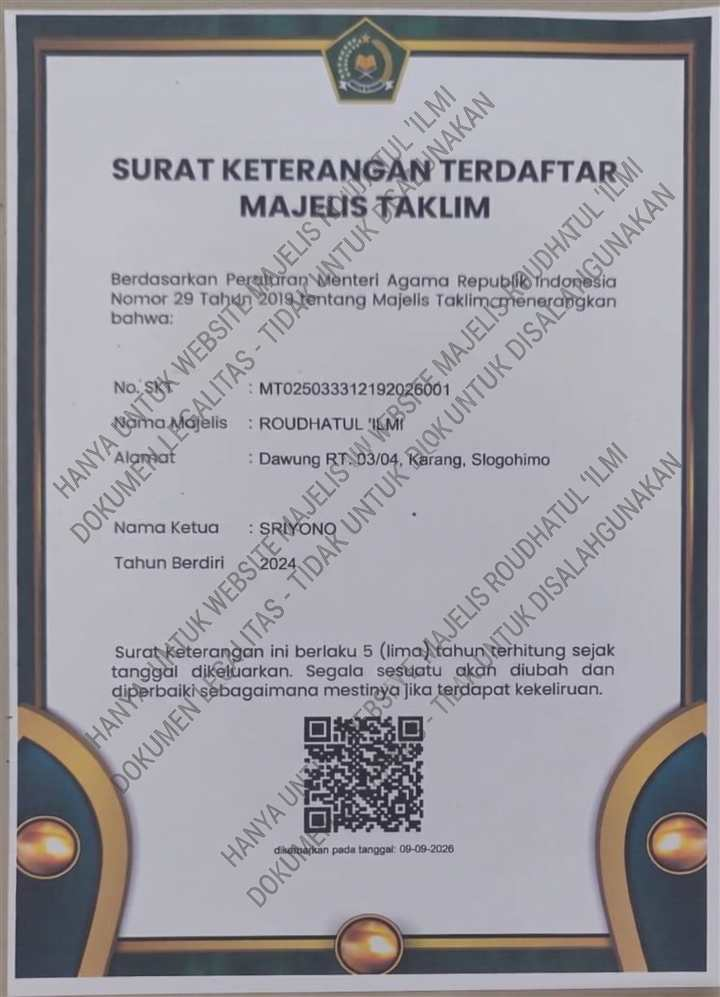

Mengenal lebih dekat sejarah, arah perjuangan dakwah, susunan pembina, serta para asatidz yang membimbing jamaah.
Al-Qur'an adalah petunjuk (hudan) dan pedoman hidup utama bagi setiap muslim. Membaca, memahami, serta mengamalkan isi kandungan Al-Qur'an merupakan kewajiban individu (fardhu 'ain) sekaligus pondasi utama dalam membangun keluarga dan masyarakat yang berakhlak mulia.
Namun, dalam realitas kehidupan bermasyarakat, masih dijumpai sebagian umat Islam yang mengalami kendala dalam membaca Al-Qur'an atau berada dalam kondisi buta huruf Al-Qur'an. Keterbatasan kemampuan ini tidak hanya menghambat kualitas ibadah mandiri, tetapi juga berpotensi memutus rantai pendidikan agama di tingkat keluarga—sehingga orang tua kesulitan mengajarkan Al-Qur'an kepada anak dan cucunya secara mandiri.
Berawal dari keprihatinan mendalam terhadap kondisi tersebut, lahir sebuah kesadaran bersama akan pentingnya wadah pembinaan keagamaan yang inklusif, merangkul, dan berkelanjutan. Majelis Taklim Roudhotul Ilmi didirikan dengan cita-cita mulia (visi utama) untuk memberantas buta huruf Al-Qur'an di tengah masyarakat.
Majelis Taklim ini hadir tidak sekadar sebagai tempat berkumpul dan menuntut ilmu, tetapi sebagai sarana pemberdayaan spiritual. Fokus awal gerakan ini difokuskan pada pengajaran baca-tulis Al-Qur'an (Tahsin/Iqra) hingga jamaah mampu membaca dengan tartil dan benar. Lebih dari itu, pembelajaran dirancang agar ilmu yang diperoleh tidak berhenti pada diri sendiri, melainkan dapat diamalkan dalam kehidupan sehari-hari serta diwariskan minimal dengan mengajarkannya kembali kepada anak, cucu, dan anggota keluarga tercinta.
Dengan terbentuknya generasi dan keluarga yang dekat dengan Al-Qur'an, diharapkan Majelis Taklim ini menjadi benteng moral, pencerah spiritual, dan sarana mencetak keluarga yang sakinah, mawaddah, wa rahmah di bawah naungan Al-Qur'an.
"Terwujudnya Majelis Taklim sebagai pusat pembinaan Al-Qur’an, ilmu, dan akhlak Islami yang unggul dalam memberantas buta huruf Al-Qur'an serta mencetak generasi yang berilmu amaliyah dan beramal ilmiah menuju masyarakat madani."
Para asatidz dan ustazah yang membimbing dan mengisi kajian rutin di Majelis Roudhotul Ilmi.
Pengajar Tahsin & Al-Qur'an
Membimbing jamaah dalam pembelajaran Tahsin dan Al-Qur'an di Majelis Taklim Roudhotul Ilmi.
Pengajar TahsinPemateri Kajian
Membimbing jamaah dalam kegiatan kajian dan pembelajaran Islam di Majelis Taklim Roudhotul Ilmi.
Pemateri KajianDikelola secara amanah oleh pengurus dan setiap seksi.
Berikut salinan Surat Keterangan Terdaftar (SKT) Majelis Taklim Roudhotul Ilmi untuk informasi publik:
